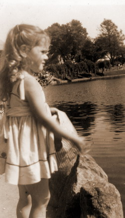
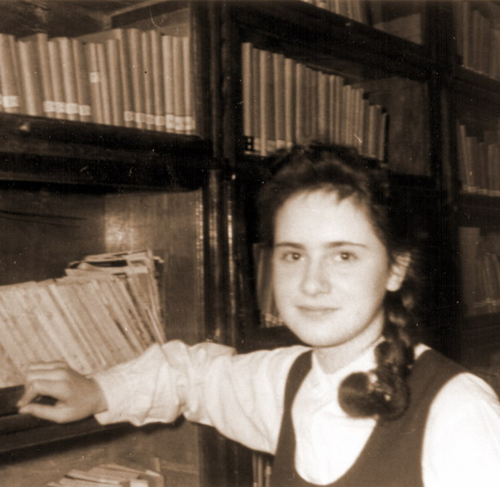
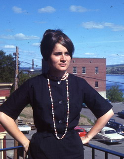
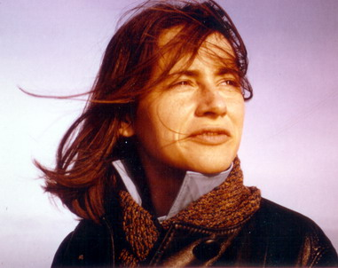
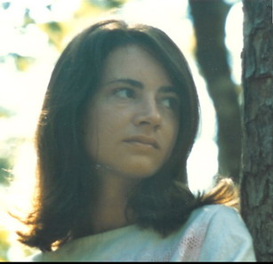
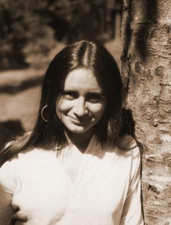
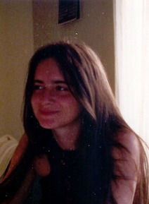
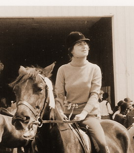
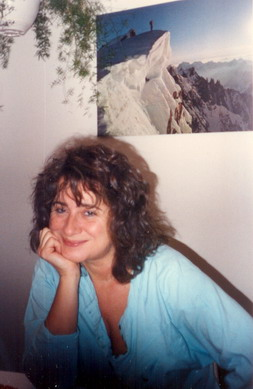

Ressources en Développement
Les psychologues humanistes !
à la suite du décès de
Michelle Larivey
(1944-2004)
| Témoignages de collègues | ||
        |
L’Automne arrivé Dans la vie de chacun, Il arrive un moment Où l’on rencontre Des personnes clés Ils sont nos mentors La chose est indéniable Leurs sens prennent formes En nous, malgré soi Dans la vie de chacun, Des phares guident nos pas Sans eux Les récifs sont plus nombreux Certains tiennent la main Plus fortement que d’autres D’autres encore, Vous accompagnent prudemment Leurs mains sont alors ouvertes Plutôt qu’exigeantes Leurs mains sont liberté Plutôt que contraignantes Dans la vie de chacun, Il y a des saisons Qui mettent du coloris Dans notre quotidien Et la Nature se transforme, Les feuilles s’éclatent de beauté Puis, se déposent doucement sur le sol L’Automne arrivé Lorsque le vent sifflera Dans les feuilles multicolores C’est tout ton grand humanisme Qui, comme un chant, nous enveloppera Merci Michelle de tes enseignements C’est tout le peuple québécois Qui t’est reconnaissant De ta belle et importante présence parmi nous. Ma tristesse est si grande, J'ai connu Michelle il y a près de vingt ans alors que j'étais un jeune psychologue en formation post-universitaire à Ressources en Développement. Durant deux ans, j'ai eu la chance de vivre l'expérience de la thérapie de groupe avec elle. Ces deux années ont été déterminantes dans mon cheminement personnel et professionnel. Je m'en souviens comme si c'était hier car l'authenticité et la rigueur avec laquelle elle animait ces groupes était extraordinaire et ses habiletés de thérapeute m'ont permis de vivre avec d'autres personnes des moments d'une intensité émotionnelle rare et jamais gratuite car toujours orientée vers une prise en charge responsable de sa vie et de ses besoins fondamentaux et cela dans le respect de l'unicité de chacun. Qu'il était beau et bon de la voir travailler, soutenir, stimuler discrètement le goût de chacun de risquer la fidélité à soi-même dans des zones de grande vulnérabilité ! Elle le faisait avec un tel doigté, un tel respect aussi des résistances de chacun. À cette époque de la croissance personnelle, je me souviens comment elle dénonçait toute tentative de créer des normes de groupe qui exerceraient une pression vers tel ou tel comportement en supprimant la difficulté d'assumer pleinement ce que l'on vivait individuellement. Chacun progressait à son rythme et selon ses enjeux propres et j’ai fait de belles découvertes sur moi et sur les autres ainsi que sur la vie émotionnelle en général dans ce groupe. Merci Michelle pour ces moments de grande émotion et de grande vérité que tu m'as permis de vivre. Quant à sa contribution professionnelle à l'essor de la psychologie québécoise, elle est importante à plus d’un titre. D'abord praticienne, elle et Jean Garneau ont réussi ce que peu d'entre nous arrivons à faire : conceptualiser sa pratique afin de pouvoir l'enseigner à d’autres. Le livre sur l’auto-développement demeure à mon avis un ouvrage phare en psychologie humaniste. De plus, Michelle a toujours eu le souci de rendre accessible à un large public les découvertes de la psychologie humaniste comme en témoigne ses livres récents et aussi le programme Savoir ressentir. Enfin, l'achalandage élevé du site web de Red témoigne de l'intérêt du public pour l’orientation humaniste centrée sur les émotions. En ces temps où il faut (en fait on veut nous faire croire qu'il le faut) démontrer scientifiquement la valeur de nos pratiques, dois-je ajouter qu’ une approche thérapeutique est sur le point de rejoindre les traitements validés empiriquement. Il s’agit du traitement humaniste de type« process-experiential » de la dépression développée par Leslie Greenberg et ses collaborateurs. En lisant le manuel de cette approche, je me disais récemment comment tout cela rejoignait le travail de Michelle Larivey et Jean Garneau, du moins dans la façon de concevoir et traiter le monde émotionnel. Au plan de la pratique clinique, on doit aussi à Michelle une conceptualisation et une pratique tout à fait innovatrice en matière de résolution du transfert. Je sais pour l'avoir vécu comme client avec elle à quel point cette pratique qui demande une grande rigueur peut apporter des changements importants en permettant la réappropriation de besoins développementaux arrêtés. La façon de faciliter cette réappropriation demeure à l'heure actuelle un sujet de grandes controverses en psychologie humaniste et psychodynamique. Mais, je crois que la contribution de Michelle (et de Jean) à cette question est parmi les plus originales et audacieuses que je connais. L’idée que ce qui nous fait le plus souffrir peut contenir en germe la source des plus grandes satisfactions est beaucoup plus révolutionnaire qu’on ne le croit dans notre domaine. Merci Michelle pour cette influence que tu continues et continueras d'avoir en moi et tous les autres que tu as touché par tes valeurs et ta présence, Bonjour Jean Reçois mes plus vives sympathie pour le décès de Michelle. tu es sans doute celui qui souffre le plus puisque tu as eu la plus grande part de notre Michelle. Pour ma tart je me sentirai longtemps rempli de sa présence lumineuse et dérangeante en moi. Je la garderai vivante en moi très très longtemps. Elle a été un être tellement déterminant dans ma vie. Je la croyais immortelle; elle me force maintenant à marcher sans elle ; comme il se doit d'être. Je prie pour vous deux. Bonjour Jean, Je suis bien peinée de cette triste nouvelle! 60 ans, c'est pas un âge pour mourir! Mais Michelle a eu une vie très bien remplie et ce jusqu'à la fin. Elle nous laisse un héritage de connaissance sur "l'art de vivre" qui m'a été très précieux à moi et à de nombreux clients. Je lui en suis, comme à toi Jean, très reconnaissante! ... Bonjour à tous, Je viens d'apprendre la triste nouvelle du décès de Michelle Larivey. J'aimerais lui rendre hommage . Elle s'est impliquée à la Fédération des psychologues au comité sur la psychothérapie, que je coordonnais, lorsque se préparait le rapport Bernier. Elle m'est apparue d'une grande rigueur intellectuelle et d'une grande générosité de son temps dans ce dossier qui lui tenait à coeur malgré un horaire chargé car , pour ceux qui ne la connaissaient pas , elle et son conjoint Jean Garneau dirigent(ait) une école de formation en psychothérapie ''Ressources en développement''. Ce travail en comité m'a permis, entre autre de constater chez elle une grande honnêteté intellectuelle et une passion pour tous les aspects de son travail (formation, écriture). Salut Michelle,tu resteras présente dans nos coeurs, … La psychologie clinique québécoise vient de perdre une des ses figures marquantes de la deuxième moitié du XXI ème siècle. |
|
Témoignages de clients |
||
|
  |
Oui, elle m'avait beaucoup aidé comme sans doute aussi, des centaines d'autres comme moi; elle le faisait si bien, si attentivement et si généreusement... elle nous manquera définitivement. Et c'est vrai que je me suis toujours trouvé chanceux d'avoir rencontré une telle personne dans ma vie, rassuré aussi de l'avoir eu, toujours disponible, pour m'accompagner. ... Je me remets tranquillement de mon choc et de ma peine. Pour moi, le lien est toujours la, sauf que je sais maintenant que je reste seul avec, qu'il n'y a plus d'interlocuteur a l'autre bout. Ca me fait tout drole, j'ai encore peine a le croire, c'est (c'était) comme impossible, mes dernieres images étant celle d'une Michelle active, vive, fébrile, bien vivante. Mais je m'y fais, je le réalise...lentement. ... A cet effet, le déces de Michelle me fait réaliser combien les agitations, les "must" importants et les angoisses de nos vies quotidiennes peuvent souvent etre exagérément amplifiés, relativement futiles et pas si importants somme toute. ... Bien cher Jean, J'emploie ces mots " bien cher Jean " pour marquer la très grande peine que je ressens et que je partage avec toi, par le décès prématuré de Michelle. J'ai appris cette nouvelle hier soir par le courriel. J'en ai été sidérée, je ne pouvais y croire. Michelle était pour moi un roc, tellement solide tout en étant toujours sensible et si chaleureusement présente dans la démarche de chacun(e) dans les groupes. La structure d'un groupe représentait bien sa rigueur de pensée. Aussi, elle était franche, sa façon directe de dire les choses, à qui que ce soit, me faisait réfléchir ( et me laissait parfois muette/peur ). Défaut qu'hélas! je conserve. Elle avait " sa " façon de pousser les gens par en avant , de laisser entrevoir un chemin, sans toutefois, mettre de pression. Ceci me rappelle le poème de Robert Frost : The road not taken. Un jour Michelle m'avait dit: Pourquoi es-tu toujours gentille avec tout le monde? ( Je ne savais pas que ... ) Maintenant, je pourrais lui dire que j'ai changé. J'ai beaucoup de peine de ne pas lui avoir écrit moi-même. Je le regretterai toujours. C'est cette façon que j'ai d'avoir peur de n'être pas à la hauteur, de ne pas dire les bonnes choses ou pas assez et puis ... je remets. Michelle nous avait prévenus de ceci dans un groupe avec un exemple. Je lui parlerais sûrement de son livre de poèmes si merveilleusement écrit. Ce soir, je prends la résolution d'agir en ton honneur. Merci Michelle. Merci aussi pour être entrée dans ma vie et je conserverai, bien au chaud sur mon coeur, une place pour toi. A la manière d'une étoile filante, tu es passée trop rapidement. Bonsoir Michelle. A vous deux, Merci pour avoir mis si généreusement toutes vos connaissances au service du publice. Et à toi, Jean et moi t'offrons nos plus sincères sympathies pour la très grande perte de cette compagne généreuse et tendre que tu aimais et avec qui tu travaillais . C'était une personne remarquablement brillante. J'étais si bouleversée à la lecture de cette nouvelle que Jean a dû me consoler. ... Je suis vraiment surpris et désolé d’apprendre le décès de Michelle. Je suis un ancien client et j’ai vraiment apprécié sont tact, sa présence et son énergie. Je la croyais invincible. Quel belle personne, j’ai l’impression d’avoir perdu une âme soeur. Salut Michelle et bon voyage. Monsieur Garneau, Je reçois votre dernier envoi sur le site de Redpsy. J'y lis des témoignages de sympathie que vous avez reçus. Cela, à la fois, ravive ma douleur et me fait du bien : le décès de Michelle Larivey est bien réel; je ne suis pas seule à la pleurer, cela brise mon isolement. J'avais pensé à vous exprimer mes condoléances mais, jusqu'à aujourd'hui, je me sentais incapable d'aligner les phrases pertinentes. Ces textes, écrits par des connaissances et des étrangers, me permettent de m'approcher, d'apprivoiser un peu plus le départ de Michelle. Voici donc quelques mots, tels qu'ils me viennent. Puissent-ils dans ces incontournables circonstances, s'ajouter au soutien moral des autres témoignages. Je pleure ma mère. C'est « par cette merveilleuse astuce de notre psychisme que l'on appelle le transfert... » (Le défi des relations p.150), que Michelle est, il y a maintenant dix ans, devenue ma mère. Avec toute l'affection, l'admiration et le respect qu'une mère idéale peut inspirer à son enfant. Son départ me cause une peine immense. J'ai soixante ans, le même âge que Michelle à quelques jours près, et c'est la première personne aussi importante dans ma vie que la mort vient chercher. J'en suis heurtée, révoltée, blessée et infiniment attristée. Je n'ai plus de mère. J'ai peine à y croire. Michelle m'a annoncé sa maladie en janvier dernier. Ce fut pour moi un choc terrible. J'ai comme déjà subi sa perte à ce moment-là. Puis, je l'ai revue à deux reprises et, tout en ayant chaque jour à affronter l'ignorance et l'inquiétude liée à son état de santé, je constate qu'en moi, je la croyais, malgré tout, immortelle. L'éloignement ainsi que mon peu de contact avec elle me rendent ce départ quasi abstrait. Depuis dimanche le 14 novembre alors que le journal m'a appris la nouvelle, autant certains jours je touche la réalité de son décès, autant, à d'autres moments cela m'apparaît tout à fait irréel et impossible. J'oserai, à ce sujet, déplorer les pratiques funéraires actuelles qui ne permettent pas bien l'adieu. Je comprends parfaitement bien les choix qui ont été faits et j'aurais agi exactement de même. Toutefois, étrangère à ses proches, j'aurais aimé, comme le dictaient jadis si justement nos croyances, assister à un rituel quelconque. J'ai fait mon offrande au CHUM mais c'est insuffisant, insatisfaisant; j'aurais voulu, anonyme, dans la pénombre du dernier banc de l'église, assister à un « cérémonial » me permettant de lui faire mes adieux en sa « présence ». Cela m'a manqué; il y a une étape que je n'ai pas pu franchir. J'ose espérer que l'expression du présent message y suppléera quelque peu. Merci Par contre, j'ai pour compagnons vos textes « Deuils et séparations » et « Les impasses du deuils » qui me sont d'un grand secours. Ils m'aident à comprendre le processus et, comme Michelle me l'a appris, à laisser venir la peine quand elle se présente, à la ressentir et à la vivre. Je sais maintenant laisser tout l'espace à mon émotion. De ces écrits, je vous remercie. J'ai aussi la précieuse satisfaction d'avoir communiqué à Michelle tout ce que j'aurais voulu lui dire : mon affection et surtout mon immense RECONNAISSANCE pour m'avoir appris à vivre. Je ressens les bienfaits de ma thérapie à chacun des instants de ma vie. MERCI encore à Michelle et merci à vous, monsieur Garneau, pour tout ce travail d'expertise, gratuitement diffusé sur le web. Michelle est dans mon coeur pour y rester. La perte est grande. Mon deuil est difficile. Mais il me permet à peine d'entrevoir combien pénible, combien colossal doit être le vôtre. Monsieur Garneau, je vous offre, bien sobrement, mes sympathies les plus profondément ressenties et « compréhensives ». Très sincèrement et avec tout mon coeur, |
|
Témoignages de lecteurs |
||
Bonsoir, Permettez-moi de vous faire part de ma tristesse alors que je viens d'apprendre la nouvelle de la mort de Michelle Larivey. Je ne la connaissais pas, pourtant je dois la remercier pour toute l'aide qu'elle m'a apportée ainsi que toute l'équipe de Letpsy pendant ces derniers mois. Je suis un peu déçue de ne vous adresser ce mot qu'aujourd'hui, dans ces circonstances alors que je lis vos lettres avec une grand intérêt depuis presque deux ans maintenant. Votre travail, et son travail à elle-même, votre générosité, sa générosité, de mettre toutes ces connaissances en ligne, gratuitement, simplement, m'ont permis de mieux comprendre et, j'espère, de mieux gérer ma vie de couple tout d'abord, puis de professionnelle aussi (je suis dans la santé), et je pense familiale maintenant. Dites-lui merci de ma part, de la part de tous ceux qu'elle a pu aider par son travail au moins, et certainement par sa présence et la richesse de sa personnalité que je devine grâce à ces publications en ligne. Merci et merci encore. Qu'elle repose en paix, et que cette paix accompagne tous les gens qu'elle aimait dans ce moment difficile. Bonjour à vous tous qui ont fait partie de la vie de Michèle, Je tenais à vous dire combien cela m'attriste de savoir que Michèle n'est plus. Je ne l'ai pas côtoyé de la même façon que vous tous, mais elle faisait partie de ma vie par ses bon livres, par le net, par tout ce que j'ai pu lire de loin et de près la concernant. J'ai encore beaucoup à apprendre de Michèle et je continuerai à ma façon de la côtoyer. Elle faisait partie de ceux qui aiment et veux partager cet amour. Quel bel héritage elle nous laisse. Michèle Je me joins à tous ceux qui t'ont côtoyée et aimée pour te rendre un dernier hommage et te dire merci pour tout. Au revoir Michèle Une de tes plus fidèles lectrices A toute votre équipe, je vous présente les très sincères condoléances d'une lectrice assidue de votre publication internet. J'avais particulièrement aimé ses poémes qui perçoivent au plus juste certaines détresses humaines auxquelles je suis sensible. Bon courage pour continuer sans elle. Mais nous savons tous qu'elle restera présente dans vos coeurs et votre esprit. Bien sincèrement. Et bien, quel choc d'apprendre cette disparition ! Loin de moi l'idée que Michelle Larivey souffrait autant. Alors je suis peiné et en colère de ne pas l'avoir su plus tôt. Je l'aurais aimé par des Emails de soutien car son travail m'a beaucoup apporté et cela sur plusieurs années. Quel choc et quelle peine. Pensez à laisser un espace pour les messages d'au revoir à cette être profondement génereux et aimant qui nous manquera. Doucement, je me permets d'introduire ma présence silencieuse et sidérée.. Laisser monter les émotions et les accueillir dans ce qu'elles sont. Merci Michèle pour tout ce que vous m'avez apporté au long de ces trois dernières années. Merci à vous aussi Jean, et tout mon Amour et ma tendresse vont vers vous ainsi que vers votre votre équipe. Tendres baisers. Je suis aussi très surpris par cette nouvelle et en même temps je me sens triste. Je ne me rendais pas vraiment compte jusqu'à maintenant, mais Michelle a réussi à faire partie de ma vie, car a elle a vraiment alimenté ma réflexion, mes essais, mes échecs... J'aurais été ravi de lui parler, comme j'ai fait avec Jean et Karène à quelques reprises. Mais je me sers de cet occasion pour le faire et la remercier pour m'avoir montré à employer ma sensibilité et aussi pour la qualité de ces textes et des sujets qu'elle a abordé. Mes pensées vont vers Jean, Karène et toute l'équipe de ReD. En mémoire de Michelle Larivey J'offre toutes mes condoléances et mes sympathies à l'équipe de RED. Le départ de Michelle Larivey vous laisse sans doute un grand vide. J'en suis vraiment navrée et je partage votre perte et tristesse. Je ne l'ai pas connue personnellement. Par ailleurs, je peux dire que Michelle Larivey m'a apporté beaucoup de bien fait dans ma vie, par ses écrits, ses connaissances, qu'elles nous a données et laissées gratuitement au sein de se site. C'est une richesse immense qui restera dans mon coeur. Je souhaite à l'équipe RED beaucoup de courage. Affectueusement, En mémoire de Michelle Larivey Je n’ai moi non plus jamais rencontré Michelle Larivey et pourtant elle tient une place particulière dans mon cœur pour tout ce qu’elle m’a apporté de bénéfique, de constructif dans ma vie. Elle m’a guidée au travers de ses différents écrits sur le transfert et les émotions pour trouver en moi les sources de l’épanouissement et du bonheur. Je lui suis profondément reconnaissante pour tout cela. Elle n’est plus et cette nouvelle m’attriste beaucoup, mais je sais qu’elle nous laisse en héritage de nombreux écrits qui prolongeront son action et son implication humaine au delà de sa disparition. Je la remercie pour cette transmission qu’elle nous fait et dont la valeur est incommensurable. Je continuerai pour ma part de m’en saisir et de m’en inspirer pour progresser et grandir dans la vie qui m’est donnée. Un immense merci à Michelle pour tout cela. Je transmets toute mes condoléances et ma compassion à l’équipe de ReD et je participe à leur immense peine qui transparaît dans la lettre psy reçue ce matin. Une pensée pour Michelle Je viens d'ouvrir ma messagerie et je reste les yeux fixés sur mon écran, ce que j'y lis me colle à ma chaise, une grande tristesse m'envahit, Michelle n'est plus là. Il y a deux ans je suis passée par une grande crise de couple qui c'est terminée par une séparation, je peux dire qu'à cette époque c'est Michelle et vous Jean, qui ont permis que je ne sombre pas, que je ne reste pas au fond du gouffre. Votre site Internet, vos écrits, et votre service de réponses aux questions personnelles m'ont permis de voir la petite lumière au fond du tunnel. Aujourd'hui je vais beaucoup mieux, mais c'est en grande partie à vous que je le dois. J'ai la chance d'avoir vu deux de mes poèmes publiés sur votre site, c'est pour moi une grande satisfaction d'avoir mis un petit grain de sable pour aider les autres selon mes capacités. Michelle, une grande tristesse est dans mon coeur aujourd'hui, vous resterez j'en suis sûre longtemps, très longtemps, dans le coeur de millions de personnes. Que puis-je dire de plus aujourd'hui, si ce n'est que je sens avoir perdu une amie. Au revoir Michelle, je ne dis pas adieu parce que vous restez vivante dans nos coeur et sur Redpsy, merci encore. |
||
Pour terminer, un témoignage en quatre étapes (ou l'art de compléter son expression) |
||
Je pleure, c'est tout. Une grande dame, une grande oeuvre, qui restera dans l'histoire, j'en suis persuadée. Je venais d'acheter son dernier livre, je ne savais pas qu'elle était mlalade, j'aurais aimé le savoir pour la remercier d'une façon ou d'une autre avant qu'elle parte pour le bien qu'elle et Jean Garneau et les autres psychologues du site ont fait à ma vie par l'existence de leur travail... Amitiés et soutien à ses proches, et à ses collègues. Deux heures plus tard Je parlais de l'histoire de la psychologie bien sûr. Depuis ce matin j'y pense... Je me sens vraiment endeuillée. C'est bête à dire, mais quand j'écrivais sur le forum, j'avais inconsciemment, je m'en rends compte maintenant, l'impression de participer un peu à cette oeuvre. Je pensais que Michèle Larivey ou Jean Garneau nous lisaient peut-être, et que cela pourrait leur donner des idées pour de nouveaux articles... Pour moi, simple lectrice, au dela de ma sympathie pour la personne que j'imaginais qu'elle était, c'est ça qui est très triste... C'est de penser qu'elle n'écrira plus rien d'autre... Très triste... Encore 7 heures plus tard Je reviens pour continuer... Je n'en reviens pas d'être touchée à ce point. Elle ne me connaissait pas mais moi j'ai l'impression d'avoir perdu une amie, et puisque c'est ici que j'ai appris à reconnaître mes émotions, je voudrais encore parler de ma tristesse, car j'en découvre de nouveaux aspects. Je suis très triste que quelque chose de si beau de si unique qu'un travail qui aide les gens à vivre mieux prenne un tel coup. Elle était trop jeune, le monde avait encore besoin d'elle... Et puisque RED nous invite a parler son impact dans nos vie, je dirais que depuis deux ou trois ans, les écrits de RED ont complètement transformé mon fonctionnement, en profondeur, m'ont permis de m'apercevoir de ma propre existence, de reconnaître mes ressentis et mes émotions, de les utiliser pour me guider dans mes actions, de me libérer, de me rendre plus avisée, plus intelligente, plus consciente, plus heureuse. Et puis je voudrais dire mon admiration pour l'oeuvre humaniste, il faudrait presque dire humanitaire, qui consiste à mettre en ligne tout ce savoir, toute cette intelligence, toute cette réflexion, sans contrepartie, juste pour "bien faire". RED fait partie de ma vie. Complètement. Et définitivement. Un jour ce site a croisé ma route et je n'ai plus jamais été comme avant. Et je terminerai donc, (car je suis un peu gênée de m'étaler comme ça), en exprimant un peu d'inquiétude pour la suite. Je suis persuadée que RED continuera à exister, j'espère et je suis sûre que les collègues de Michèle Larivey poursuivront ce travail admirable, et je leur fais encore part de mon soutien pour cette belle "mission" qui profite à tant de gens. Dix jours maintenant... Les conversations ont repris sur le babillard, mais je continue à penser tristement à elle qui n'est plus parmi nous... Notre bienfaitrice pour ainsi dire (avec jean Garneau évidemment et tous leurs collègues)... En tous cas quelqu'un dont on peut dire: Heureusement pour nous! Heureusement qu'Internet a permis que nous profitions de ses écrits! Je lui renouvelle ma gratitude, et mes pensées à ses proches et collègues... |
||
et à celles dont le message n'a pas été cité La qualité de votre expression a été pour nous un précieux réconfort. |
||
|
| Tous droits réservés © 2004 par Ressources en Développement inc. |

|